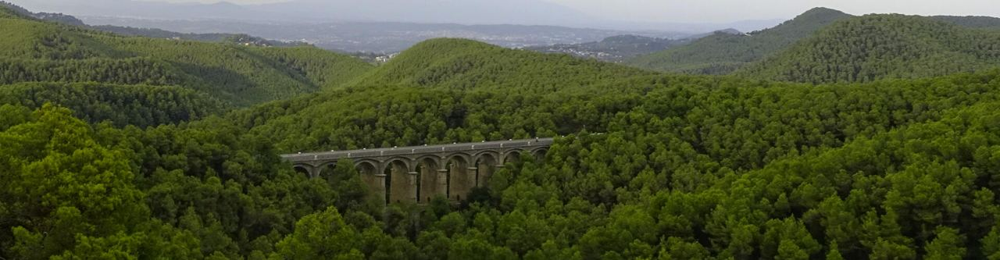

Ruta · Vallirana
Si la història és per aprendre d’ella, les rutes històriques en són una bona eina. Aquest itinerari passa per diferents monuments o espais de Vallirana commemoratius dels fets de la Guerra Civil…